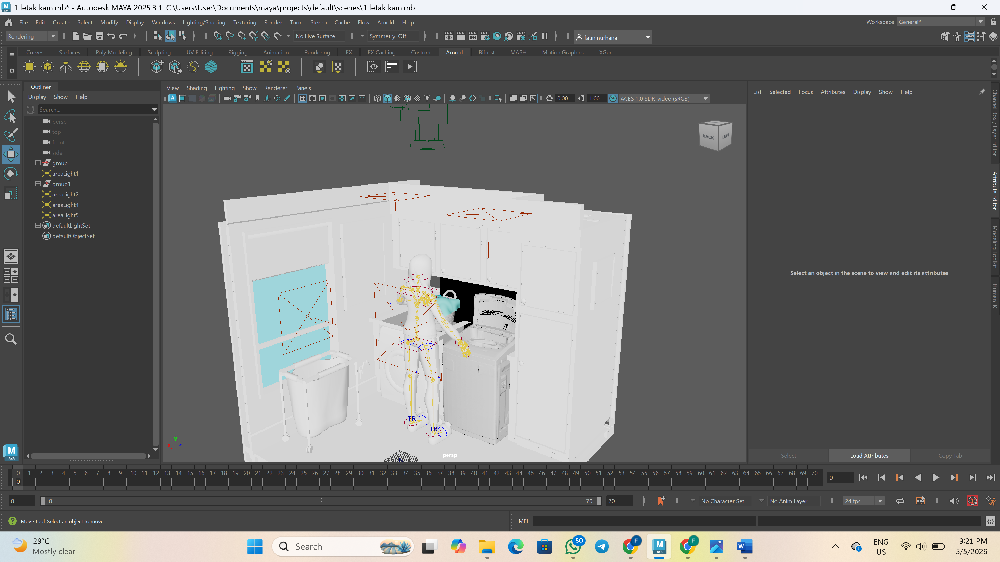
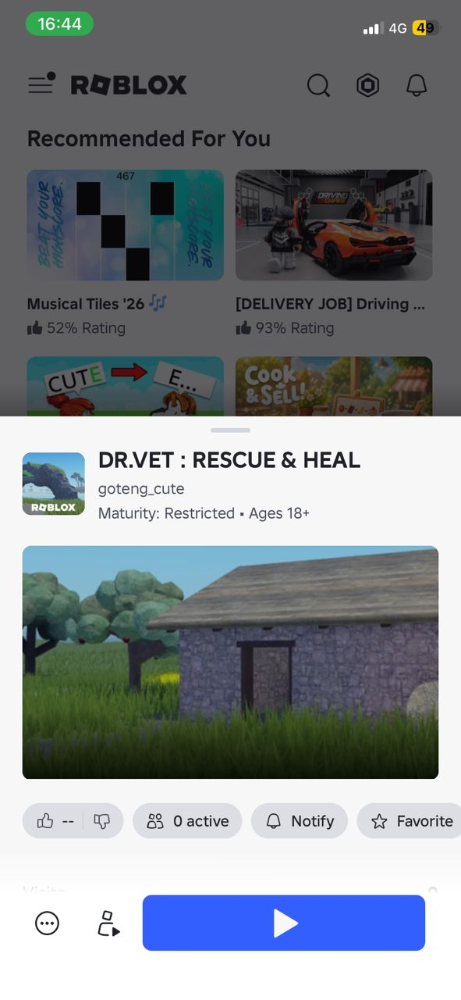
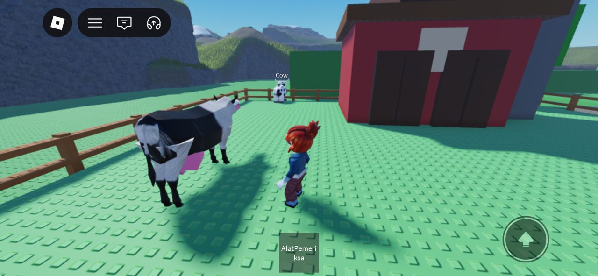
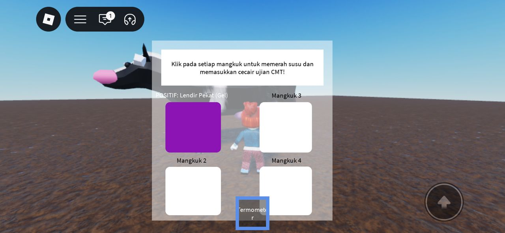

Welcome to my creative space! Explore my handpicked works spanning across photography, 3D animations, interactive game development, and extracurricular achievements. 🚀✨


My Photography
Photography Showcase:
@fatin_han4
3D Animation & Models
🎬 Animated Short Film / Render:
🎬 Animation Showcase 2:
Behind The Scenes: Production Workflow 👩💻
A glimpse into my 3D asset pipeline, character positioning, layout setup, and lighting configuration using industry-standard production tools.

Final Render

Top View Layout

3D Environment
Character & Props Setup
VetQuest: Bovine Care Simulator 🐮🚀
An educational 3D simulation game developed in Roblox Studio that immerses players into the role of a veterinarian specializing in bovine healthcare. The game features interactive gameplay where players diagnose various cattle diseases and learn step-by-step medical treatment procedures. This project integrates custom Lua scripting for the treatment mechanics, creative level design, and dynamic lighting to create an engaging, educational experience.



Extracurricular & Certifications
Active participation in professional tech workshops, digital entrepreneurship, and national student initiatives during my time at UniSZA.
Digital Entrepreneurship Certification
Successfully completed structured digital talent development tracks under MDEC:[cite: 2, 3]
- eUM08: TikTok For Business by Coach Azriel (Completed: 3 Nov 2024)
- eUM01: Business Model Strategy by Coach Salwa (Completed: 5 July 2024)
UNIPreneur 4.0 Initiative
Appointed student entrepreneur for the national UNIPreneur 4.0 (July 2024 - December 2024) project track[cite: 1]. Managed active task flows, project milestones, and business coordination routines at UniSZA[cite: 1].